library("gt") #great tables
library("tidyverse") #tools for data wrangling and visualization
# school colors
princeton_orange <- "#E77500"
princeton_black <- "#121212"SML 201
Libraries and Helper Functions
vbinom <- function(k_obs, n, p, labels = TRUE){
# make data frame
k_vals <- 0:n
pk <- dbinom(k_vals, n, p)
k_bool <- k_vals %in% k_obs
df_binom <- data.frame(k_vals, pk, k_bool)
# compute requested probability
answer_prob = round(sum(dbinom(k_obs, n, p)), 4)
# define bar plot
this_plot <- if(labels){
df_binom |>
ggplot(aes(x = factor(k_vals), y = pk, color = k_bool, fill = k_bool)) +
geom_bar(stat = "identity") +
geom_label(aes(x = factor(k_vals), y = pk, label = round(pk, 4)),
color = "black", fill = "white") +
labs(subtitle = paste0("n = ", n, ", k = ", list(k_obs), ", p = ", p, ", P(k = ", list(k_obs), ") = ", answer_prob),
caption = "SML 201",
y = "probability") +
theme(
legend.position = "bottom",
panel.background = element_blank()
)
} else{
df_binom |>
ggplot(aes(x = factor(k_vals), y = pk, color = k_bool, fill = k_bool)) +
geom_bar(stat = "identity") +
labs(subtitle = paste0("n = ", n, ", k = ", list(k_obs), ", p = ", p, ", P(k = ", list(k_obs), ") = ", answer_prob),
caption = "SML 201",
y = "probability") +
theme(
legend.position = "bottom",
panel.background = element_blank()
)
}
# plot bar chart
this_plot
}# helper function
vnorm <- function(x, mu = 0, sigma = 1, section = "lower"){
# bell curve
x_vals <- seq(mu - 4*sigma, mu + 4*sigma, length.out = 201)
y_vals <- dnorm(x_vals, mu, sigma)
df_for_graph <- data.frame(x_vals, y_vals)
# outline shaded regions
if(length(x) == 1){
shade_left <- rbind(c(x[1],0), df_for_graph |>
filter(x_vals < x[1]))
shade_right <- rbind(c(x[1],0), df_for_graph |>
filter(x_vals > x[1]))
}
if(length(x) == 2){
shade_between <- rbind(c(x[1],0),
df_for_graph |>
filter(x_vals > x[1] &
x_vals < x[2]),
c(x[2],0))
shade_tails <- rbind(df_for_graph |>
filter(x_vals < x[1]),
c(x[1],0),
c(x[2],0),
df_for_graph |>
filter(x_vals > x[2]))
}
if(section == "lower"){
bell_curve <- df_for_graph |>
ggplot(aes(x_vals, y_vals)) +
geom_polygon(aes(x = x_vals, y = y_vals),
data = shade_left,
fill = "#E77500",) +
geom_line(color = "gray50", linewidth = 2)
prob_val <- round(pnorm(x,mu,sigma), 4)
}
if(section == "upper"){
bell_curve <- df_for_graph |>
ggplot(aes(x_vals, y_vals)) +
geom_polygon(aes(x = x_vals, y = y_vals),
data = shade_right,
fill = "#E77500",) +
geom_line(color = "gray50", linewidth = 2)
prob_val <- 1 - round(pnorm(x,mu,sigma), 4)
}
if(section == "between"){
bell_curve <- df_for_graph |>
ggplot(aes(x_vals, y_vals)) +
geom_polygon(aes(x = x_vals, y = y_vals),
data = shade_between,
fill = "#E77500",) +
geom_line(color = "gray50", linewidth = 2)
prob_val <- round(diff(pnorm(x,mu,sigma)), 4)
}
if(section == "tails"){
bell_curve <- df_for_graph |>
ggplot(aes(x_vals, y_vals)) +
geom_polygon(aes(x = x_vals, y = y_vals),
data = shade_tails,
fill = "#E77500",) +
geom_line(color = "gray50", linewidth = 2)
prob_val <- round(1 - diff(pnorm(x,mu,sigma)), 4)
}
# plot bell curve
bell_curve +
labs(subtitle = paste0("Probability: ", prob_val),
caption = "SML 201", y = "") +
theme_minimal()
}Start
Goal: Estimate known population statistics
Objective: Use density plots to explore biased and unbiased estimators
Recap: Mean Corpuscular Volume
The mean corpusular volume or mean cell volume (MCV) is the average volume of a red blood cell. The following information was gathered, adapted, heavily rounded from the Wikipedia page, and should not constitute medical advice. For these mathematical examples, assume that the mean MCV is \(\mu = 90\) fL/cell with a standard deviation of \(\sigma = 5\) fL/cell and that we can apply the normal distribution based on numerous blood tests.
Estimating Populations
How did we know that the average MCV was 90 for the entire population?
- We actually don’t know the population mean.
- Historical data points toward a sample mean of \(\bar{x} = 90\) fL/cell.
- Why are we allowed to go from the sample mean \(\bar{x}\) to the population mean \(\mu\)?
Scenario: D20
For today’s session, we need a setting with known statistics (mean, median, variance, etc.). Picture a “d20” (i.e. a 20-sided die). Its outcome space is a discrete uniform distribution (i.e. each outcome is equally likely):
\[X = \{1, 2, 3, 4, 5, 6, 7, 8, 9, 10, 11, 12, 13, 14, 15, 16, 17, 18, 19, 20\}\]
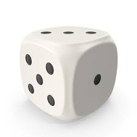
\[\begin{array}{rrcccl} \text{mean: } & \mu & = & \frac{1}{N}\sum_{i=1}^{N} x_{i} & = & 10.5 \\ \text{median: } & \nu & = & \frac{1}{2}\left(x_{\lfloor\frac{N+1}{2}\rfloor} + x_{\lceil\frac{N+1}{2}\rceil}\right) & = & 10.5 \\ \text{variance: } & \mu & = & \frac{1}{N}\sum_{i=1}^{N} (x_{i} - \mu)^{2} & = & 33.25 \\ \end{array}\]
# outcome space (already sorted)
d20_die <- 1:20
# population length
N <- length(d20_die)
# population mean
mu <- sum(d20_die)/N
# population median
nu <- 0.5*(d20_die[floor((N+1)/2)] + d20_die[ceiling((N+1)/2)])
# population variance
sigma_sq <- sum((d20_die - mu)^2)/N
# population standard deviation
sigma <- sqrt(sigma_sq)
Experiment’s Design
- roll the d20 \(n = 10\) times
- compute a sample stat (e.g. mean)
- repeat steps (1) and (2) \(N = 1000\) times
- construct density plot of the sampling distribution
- compare the mode(s) of the density plot to population stat
Biased or Unbiased
Sample Mean
\[\bar{x} = \frac{1}{n}\sum_{i=1}^{n} x_{i}\]
N <- 10000 #number of experiment iterations
samp_dist <- rep(NA, N) #allocate space to store sample calculations
for(i in 1:N){
#roll d20 n = 10 times
these_rolls <- sample(d20_die, size = 10, replace = TRUE)
#record this sample stat
samp_dist[i] <- mean(these_rolls)
}
df_for_graph <- data.frame(
id = 1:N,
samp_dist = samp_dist
)df_for_graph |>
ggplot() +
geom_density(aes(x = samp_dist),
color = "black", linewidth = 2) +
geom_vline(aes(xintercept = mu),
color = "red", linewidth = 3) +
geom_vline(aes(xintercept = mean(samp_dist)),
color = princeton_orange, linetype = 2, linewidth = 3) +
labs(title = "Biased or Unbiased?",
subtitle = "black: sample distribution\norange: average of samples\nred: true population stat",
caption = "SML 201") +
theme_minimal()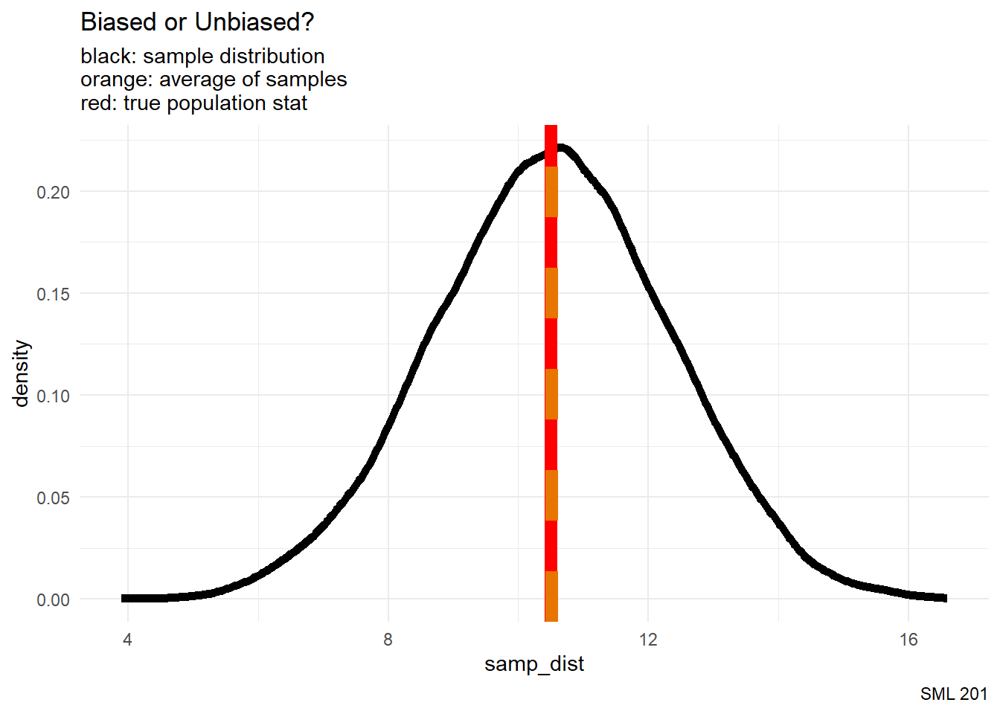
We say that the sample mean \(\bar{x}\) is an unbiased estimator for the population mean \(\mu\).
Sample Median
\[\nu = \frac{1}{2}\left(x_{\lfloor\frac{n+1}{2}\rfloor} + x_{\lceil\frac{n+1}{2}\rceil}\right)\]
For this experiment, Derek wanted an asymmetrical outcome space.
\[\{1, 2, 3, 14, 16, 18, 20\}\] whose population median is \(\nu = 14\).
d7_die <- c(1, 2, 3, 14, 16, 18, 20)
N <- 10000 #number of experiment iterations
samp_dist <- rep(NA, N) #allocate space to store sample calculations
for(i in 1:N){
#roll d20 n = 10 times
these_rolls <- sample(d7_die, size = 10, replace = TRUE)
#record this sample stat
samp_dist[i] <- median(these_rolls)
}
df_for_graph <- data.frame(
id = 1:N,
samp_dist = samp_dist
)df_for_graph |>
ggplot() +
geom_density(aes(x = samp_dist),
color = "black", linewidth = 2) +
geom_vline(aes(xintercept = 14),
color = "red", linewidth = 3) +
geom_vline(aes(xintercept = mean(samp_dist)),
color = princeton_orange, linetype = 2, linewidth = 3) +
labs(title = "Biased or Unbiased?",
subtitle = "black: sample distribution\norange: average of samples\nred: true population stat",
caption = "SML 201") +
theme_minimal()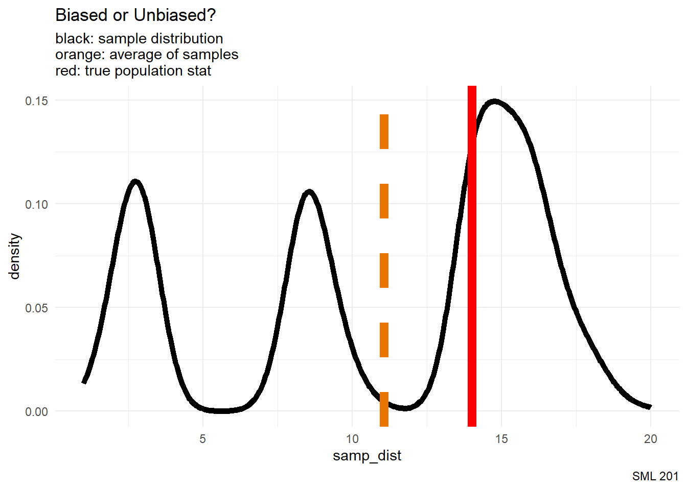
Since the modes do not appear to align with the population median, we say that the sample median is a biased estimator of the population median. In our visualizations today, the bias is the horizontal distance between the red and orange lines.
Population Variance
\[\sigma^{2} = \frac{1}{N}\sum_{i=1}^{N} (x_{i} - \mu)^{2}\]
pop_var <- function(x){
N <- length(x)
mu <- mean(x)
sigma_sq <- sum((x - mu)^{2})/N
#return
sigma_sq
}N <- 10000 #number of experiment iterations
samp_dist <- rep(NA, N) #allocate space to store sample calculations
for(i in 1:N){
#roll d20 n = 10 times
these_rolls <- sample(d20_die, size = 10, replace = TRUE)
#record this sample stat
samp_dist[i] <- pop_var(these_rolls)
}
df_for_graph <- data.frame(
id = 1:N,
samp_dist = samp_dist
)df_for_graph |>
ggplot() +
geom_density(aes(x = samp_dist),
color = "black", linewidth = 2) +
geom_vline(aes(xintercept = sigma_sq),
color = "red", linewidth = 3) +
geom_vline(aes(xintercept = mean(samp_dist)),
color = princeton_orange, linetype = 2, linewidth = 3) +
labs(title = "Biased or Unbiased?",
subtitle = "black: sample distribution\norange: average of samples\nred: true population stat",
caption = "SML 201") +
theme_minimal()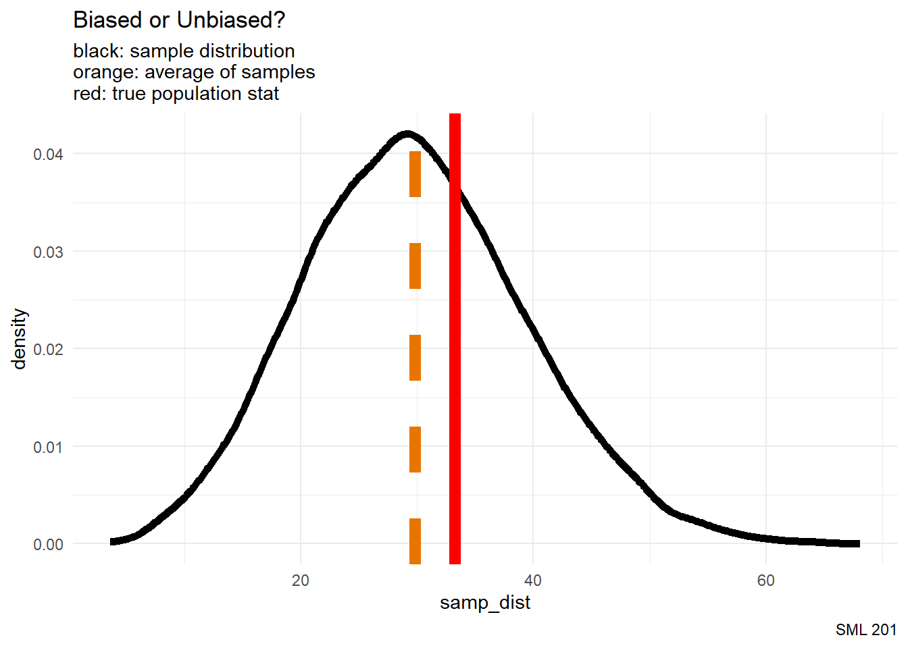
Upon reapplying the population variance formula to the samples, we see that the resulting sampling distribution tends to underestimate the true population variance. So far, this formula is a biased estimator of the population variance.
Sample Variance
\[s^{2} = \frac{1}{n-1}\sum_{i=1}^{n} (x_{i} - \bar{x})^{2}\]
samp_var <- function(x){
n <- length(x)
xbar <- mean(x)
# Bessel's correction: "n-1"
s_sq <- sum((x - xbar)^{2})/(n-1)
#return
s_sq
}N <- 10000 #number of experiment iterations
samp_dist <- rep(NA, N) #allocate space to store sample calculations
for(i in 1:N){
#roll d20 n = 10 times
these_rolls <- sample(d20_die, size = 10, replace = TRUE)
#record this sample stat
samp_dist[i] <- samp_var(these_rolls)
}
df_for_graph <- data.frame(
id = 1:N,
samp_dist = samp_dist
)df_for_graph |>
ggplot() +
geom_density(aes(x = samp_dist),
color = "black", linewidth = 2) +
geom_vline(aes(xintercept = sigma_sq),
color = "red", linewidth = 3) +
geom_vline(aes(xintercept = mean(samp_dist)),
color = princeton_orange, linetype = 2, linewidth = 3) +
labs(title = "Biased or Unbiased?",
subtitle = "black: sample distribution\norange: average of samples\nred: true population stat",
caption = "SML 201") +
theme_minimal()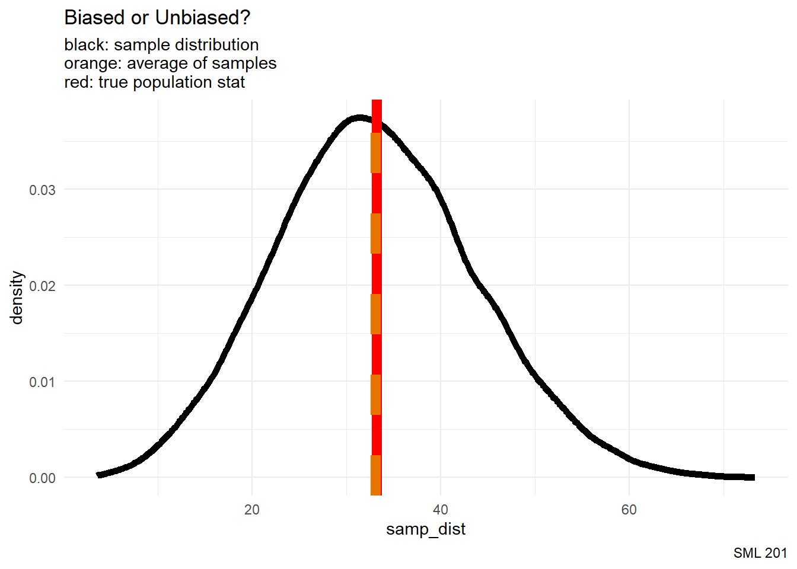
Now, with Bessel’s correction, we say that the sample variance is an unbiased estimator for the population variance.
(optional) Bessel’s Correction
Claim: The sample variance formula with \(n-1\)
\[s^{2} = \frac{1}{n-1}\sum_{i=1}^{n} (x_{i} - \bar{x})^{2}\] is an unbiased estimator for the population variance \(\sigma^{2}\).
Proof: (omitted)
- takes about 4 Calculus lectures to explain
Sample Standard Deviation
\[s= \sqrt{\frac{1}{n}\sum_{i=1}^{n} (x_{i} - \bar{x})^{2}}\]
set.seed(20241029)
N <- 10000 #number of experiment iterations
samp_dist <- rep(NA, N) #allocate space to store sample calculations
for(i in 1:N){
#roll d20 n = 10 times
these_rolls <- sample(d20_die, size = 10, replace = TRUE)
#record this sample stat
samp_dist[i] <- sqrt(samp_var(these_rolls))
}
df_for_graph <- data.frame(
id = 1:N,
samp_dist = samp_dist
)df_for_graph |>
ggplot() +
geom_density(aes(x = samp_dist),
color = "black", linewidth = 2) +
geom_vline(aes(xintercept = sigma),
color = "red", linewidth = 3) +
geom_vline(aes(xintercept = mean(samp_dist)),
color = princeton_orange, linetype = 2, linewidth = 3) +
labs(title = "Biased or Unbiased?",
subtitle = "black: sample distribution\norange: average of samples\nred: true population stat",
caption = "SML 201") +
theme_minimal()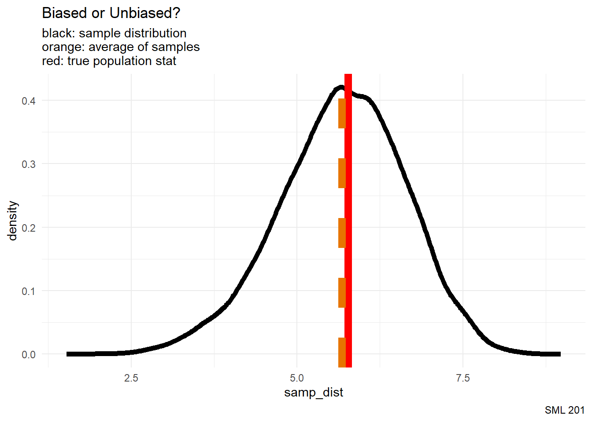
It can be mathematically proven that the sample standard deviation is a biased estimator (as it tends to underestimate the true population standard deviation), but the bias is treated as negligible in practice.
Sample Extrema
N <- 10000 #number of experiment iterations
samp_dist <- rep(NA, N) #allocate space to store sample calculations
for(i in 1:N){
#roll d20 n = 10 times
these_rolls <- sample(d20_die, size = 10, replace = TRUE)
#record this sample stat
samp_dist[i] <- min(these_rolls)
}
df_for_graph <- data.frame(
id = 1:N,
samp_dist = samp_dist
)df_for_graph |>
ggplot() +
geom_density(aes(x = samp_dist),
color = "black", linewidth = 2) +
geom_vline(aes(xintercept = 1),
color = "red", linewidth = 3) +
geom_vline(aes(xintercept = mean(samp_dist)),
color = princeton_orange, linetype = 2, linewidth = 3) +
labs(title = "Biased or Unbiased?",
subtitle = "black: sample distribution\norange: average of samples\nred: true population stat",
caption = "SML 201") +
theme_minimal()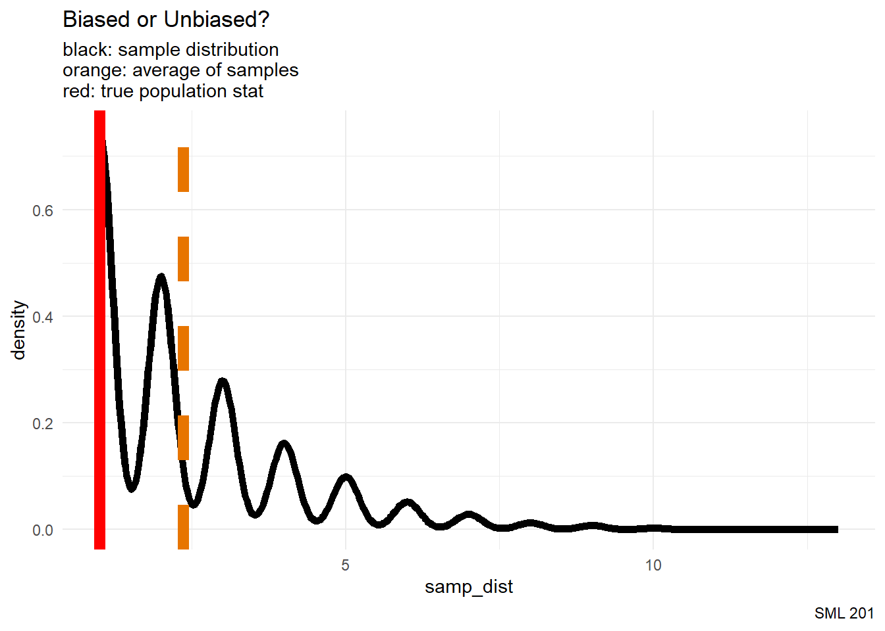
It is quickly apparent that the sample minimum (or maximum) is a biased estimator for the population minimum (or maximum).
Sample Proportion
N <- 10000 #number of experiment iterations
samp_dist <- rep(NA, N) #allocate space to store sample calculations
for(i in 1:N){
#roll d20 n = 10 times
these_rolls <- sample(d20_die, size = 10, replace = TRUE)
#record this sample stat
samp_dist[i] <- mean(these_rolls < 12)
}
df_for_graph <- data.frame(
id = 1:N,
samp_dist = samp_dist
)df_for_graph |>
ggplot() +
geom_density(aes(x = samp_dist),
color = "black", linewidth = 2) +
geom_vline(aes(xintercept = 11/20),
color = "red", linewidth = 3) +
geom_vline(aes(xintercept = mean(samp_dist)),
color = princeton_orange, linetype = 2, linewidth = 3) +
labs(title = "Biased or Unbiased?",
subtitle = "black: sample distribution\norange: average of samples\nred: true population stat",
caption = "SML 201") +
theme_minimal()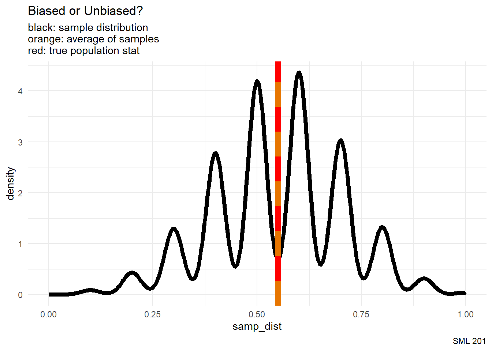
It may not be apparent from this empirical experiment, but the sample proportion is said to be an unbiased estimator for the population proportion.
Summary
When are we allowed to use sample statistics to describe the overall population. We proceed by using unbiased estimators (and the sample standard deviation).
| Statistical Estimators | |
|---|---|
| from samples to populations | |
| estimator | bias |
| sample mean | unbiased |
| sample median | biased |
| population variance | biased |
| sample variance | unbiased |
| sample standard deviation | negligible bias |
| sample minimum | biased |
| sample maximum | biased |
| sample proportion | unbiased |
| SML 201 | |
data.frame(
estimator = c("sample mean", "sample median", "population variance", "sample variance", "sample standard deviation", "sample minimum", "sample maximum", "sample proportion"),
bias = c("unbiased", "biased", "biased", "unbiased", "negligible bias", "biased", "biased", "unbiased")
) |>
gt() |>
cols_align(align = "center") |>
tab_footnote(footnote = "SML 201") |>
tab_header(
title = "Statistical Estimators",
subtitle = "from samples to populations"
) |>
tab_style(
style = cell_text(weight = "bold"),
locations = cells_column_labels()
) |>
tab_style(
style = cell_text(color = "red"),
locations = cells_body(rows = bias == "biased")
) |>
tab_style(
style = list(
cell_fill(color = princeton_orange),
cell_text(weight = "bold")
),
locations = cells_body(rows = bias == "unbiased")
)Animations
The gifski package allows us to make animations from a collection of still images.
Horizontal Translation
mu_vals <- seq(-4, 4, by = 0.5)- \(x \in \mu \pm 1\)
- \(\sigma = 1\)
mu_vals <- seq(-4, 4, by = 0.5)
N <- length(mu_vals)
for(i in 1:N){
this_plot <- vnorm(c(mu_vals[i] - 1, mu_vals[i] + 1),
mu_vals[i], 1, section = "between") +
labs(title = "Changing Mean") +
xlim(-5, 5)
ggsave(paste0("images/norm_plot", LETTERS[i], ".png"), this_plot)
}
png_files <- Sys.glob("images/norm_plot*.png")
gifski::gifski(
png_files,
"norm_animation.gif", #output file name
height = 800, width = 800, #you may change the resolution
delay = 1/2 #seconds
)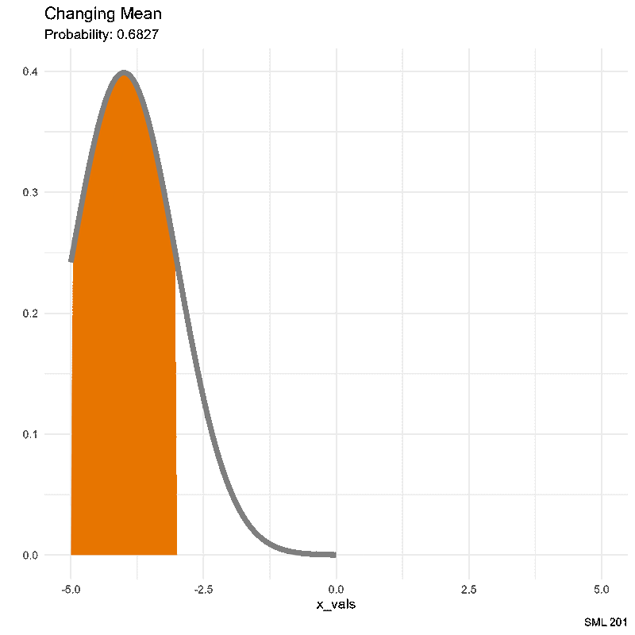
Increasing Sample Size
Here we will use the vbinom function with various increasing values for the sample size \(n\) and a constant value for the population proportion \(p\).
n_vals <- seq(9, 30)
n_vals <- seq(9, 30)
p <- 0.37
N <- length(n_vals)
for(i in 1:N){
this_plot <- vbinom(round(n_vals[i]/4):round(3*n_vals[i]/4),
n_vals[i], p, labels = FALSE) +
labs(title = "Central Limit Theorem")
ggsave(paste0("images/CLT_plot", LETTERS[i], ".png"), this_plot)
}
png_files <- Sys.glob("images/CLT_plot*.png")
gifski::gifski(
png_files,
"CLT_animation.gif", #output file name
height = 800, width = 800, #you may change the resolution
delay = 1/3 #seconds
)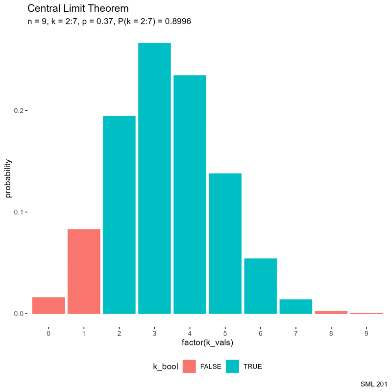
Central Limit Theorem
The Central Limit Theorem states that the sampling distribution of the mean converges to the standard normal distribution
\[z\text{-score:} \quad z = \frac{x - \mu}{\sigma} \quad\rightarrow\quad Z_{n} = \frac{\bar{X}_{n} - \mu}{\frac{\sigma}{\sqrt{n}}}\]
Example: Computing Cluster
For a request to use the campus computing cluster, and knowing that your independent jobs’ duration times are normally distributed with a mean of one hour and a standard deviation of 10 minutes, answer the following inquiries.
One Observation
- What is the probability that a randomly selected job has a duration of under 57 minutes.
pnorm(57, 60, 10)[1] 0.3820886vnorm(57, 60, 10) +
labs(title = "Campus Computing Example (n = 1 job)") +
xlim(20, 100)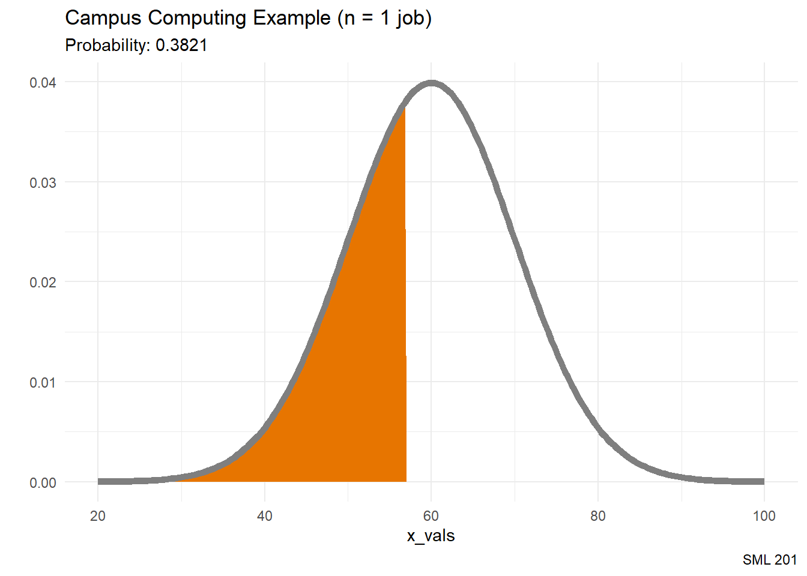
Average Observation
- What is the probability that the average duration of your 28 jobs is less than 57 minutes?
pnorm(57, 60, 10/sqrt(28))[1] 0.05620529vnorm(57, 60, 10/sqrt(28)) +
labs(title = "Campus Computing Example (n = 28 jobs)") +
xlim(20, 100)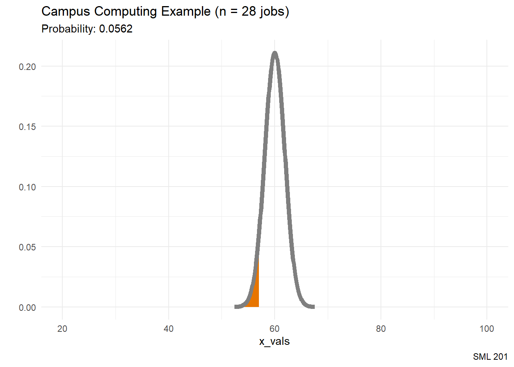
Intuition
As the sample size (\(n\)) increases, it is less likely to observe an average in the tails of a normal distribution.
Quo Vadimus?
- Precept 7
- Project 2 (due Oct 30)
- Coloring Assignment 2
- Exam 2 (December 5)
- image source: Simpsons (TV show)
Footnotes
(optional) Additional Resources
Session Info
sessionInfo()R version 4.4.1 (2024-06-14 ucrt)
Platform: x86_64-w64-mingw32/x64
Running under: Windows 10 x64 (build 19045)
Matrix products: default
locale:
[1] LC_COLLATE=English_United States.utf8
[2] LC_CTYPE=English_United States.utf8
[3] LC_MONETARY=English_United States.utf8
[4] LC_NUMERIC=C
[5] LC_TIME=English_United States.utf8
time zone: America/New_York
tzcode source: internal
attached base packages:
[1] stats graphics grDevices utils datasets methods base
other attached packages:
[1] lubridate_1.9.3 forcats_1.0.0 stringr_1.5.1 dplyr_1.1.4
[5] purrr_1.0.2 readr_2.1.5 tidyr_1.3.1 tibble_3.2.1
[9] ggplot2_3.5.1 tidyverse_2.0.0 gt_0.11.1
loaded via a namespace (and not attached):
[1] gtable_0.3.5 jsonlite_1.8.8 compiler_4.4.1 tidyselect_1.2.1
[5] xml2_1.3.6 scales_1.3.0 yaml_2.3.8 fastmap_1.2.0
[9] R6_2.5.1 labeling_0.4.3 generics_0.1.3 knitr_1.48
[13] htmlwidgets_1.6.4 munsell_0.5.1 pillar_1.9.0 tzdb_0.4.0
[17] rlang_1.1.4 utf8_1.2.4 stringi_1.8.4 xfun_0.48
[21] sass_0.4.9 timechange_0.3.0 cli_3.6.2 withr_3.0.1
[25] magrittr_2.0.3 digest_0.6.35 grid_4.4.1 rstudioapi_0.17.0
[29] hms_1.1.3 lifecycle_1.0.4 vctrs_0.6.5 evaluate_1.0.1
[33] glue_1.7.0 farver_2.1.2 fansi_1.0.6 colorspace_2.1-1
[37] rmarkdown_2.28 tools_4.4.1 pkgconfig_2.0.3 htmltools_0.5.8.1
Example Callout Block
note, tip, warning, caution, or important